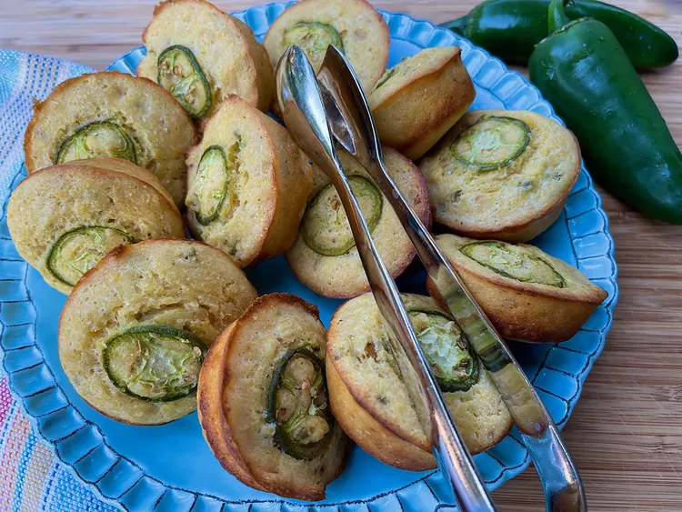

Jalapeno-Cornbread-Muffin, by Brenda Venable via allrecipes.com

Recipe from
allrecipes.com
This is a fantastic looking recipe curtosy of Brenda Venable from allrecipes.com
Ingredients
- 1/4 cup unsalted butter, plus more for greasing muffin tins
- 1/4 cup minced jalapeño, seeded and white membranes removed, plus 12 thin slices
- 2 large eggs, lightly beaten
- 1 cup buttermilk
- 1 cup plain yellow cornmeal
- 1/2 cup all-purpose flower
- 1 teaspoon taco seasoning
- 1 teaspoon salt
- 1/2 teaspoon baking soda
Directions
- Preheat oven to 375 degrees F (190 degrees C) and grease the cups of a 12-muffin tin.
- Place 1/4 cup butter in a small skillet and melt. When butter is melted, add onion and minced jalapeño and cook, stirring occasionally, 3 to 5 minutes. Set aside to cool. Place 1/4 cup butter in a small skillet and melt. When butter is melted, add onion and minced jalapeño and cook, stirring occasionally, 3 to 5 minutes. Set aside to cool.
- In a mixing bowl, combine beaten eggs and buttermilk, stirring briskly to combine.
- In a separate bowl, whisk together cornmeal, flour, taco seasoning, salt, and baking soda.
- When the onions and jalapeños have cooled to room temperature, combine with egg and buttermilk mixture, stirring briskly.
- Add wet ingredients to dry ingredients, stirring until dry ingredients are just moistened and there are no lumps. Pour batter evenly into prepared muffin cups. Place a slice of jalapeño on top of each muffin.
- Bake in the center of the preheated oven until browned and a toothpick inserted into the middle of the muffin comes out clean, about 25 minutes. If it does not come out clean, bake about 5 minutes more and test again.
- Cool in the pan on a rack, about 5 minutes. Serve warm.
I did not create this recipe, this was simply used to practice creating a website. All credits go to Brenda Venable and allrecipes.com for this recipe